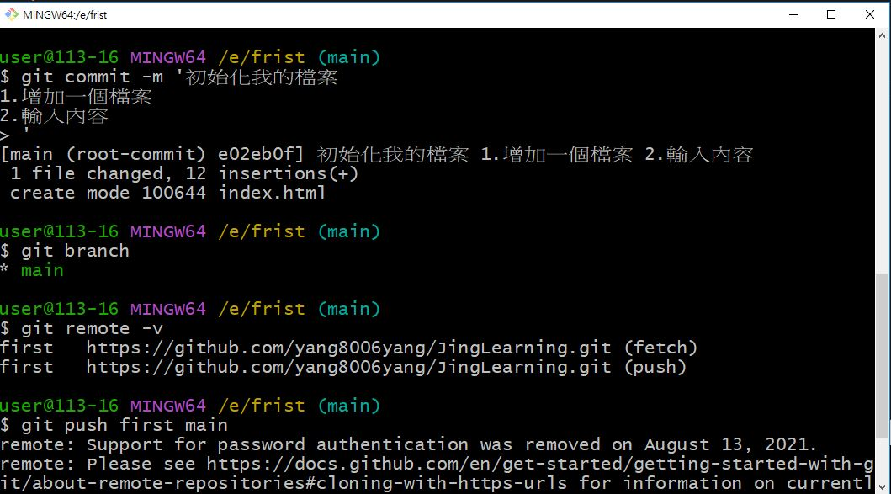
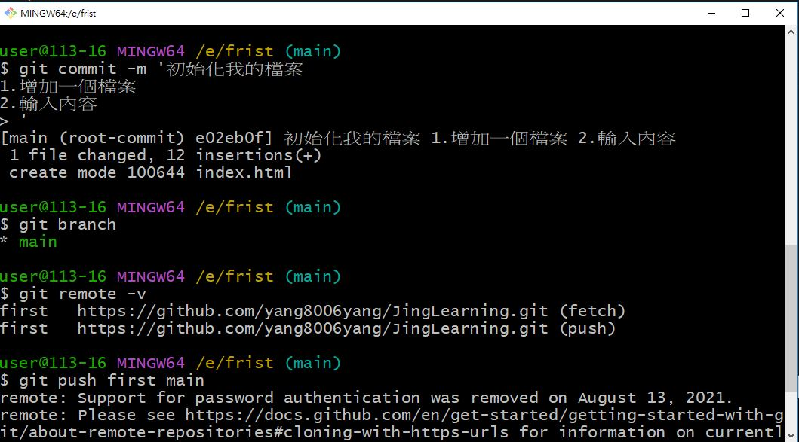

- lorem +要的數量>>enter =假資料
VSCode 擴充


VS Code's HOT KEY
- !+tab 跑出開頭結構
- ctrl+/ 跑出註解
- ALT+ 左鍵= 游標多選
- CTRL+D 選取我要的單字
- CTRL +左右=快速切換單字
- CTRL+SHIFT+F 格式化文件 for排版文字
- SHIFT+ HOME/ SHIFT+END 全選那行
- ALT + 上下 移動那行文字
- CRTL+D 選擇同樣的單字
GIT
專案管理的東東，有多元宇宙的Fu
- 安裝
- 常用指令
安裝完在cwd輸入 git -v，如有看到版本則成功
| git 指令 -h | 查指令 |
| 指令 | 說明 |
| git init | 初始化 (把該資料夾變成git的地盤) *只吃最外層的.git，外面init過在裡面再設一次沒用 |
| git add . | 加到追蹤 ( . = 全部) |
| git commit (-m '文字') | 寫自己做了甚麼事、註解 |
| git rm 檔名 | 刪除檔案 |
| git status | 知道git的狀況 |
| git log | 查看版本紀錄 |
| git congig --global user.name/email 名字/信箱 | 設定用戶名稱/電子郵件 |
| git checkout 代碼至少前5碼 | 切換所在位置 |
| git log --graph --all | 看所有的分支圖 |
| git reflog | 看前面都做了什麼動作 |
| git branch | 看自己在哪個分支 |
| git branch 名字 | 增加分支 |
| git switch 名字 | 移動到該分支 |
| git switch -c 名字 | 增加分支 |
| git merge 被合併的分支名字(A) | 合併分支(所再分支與A合併) |
| git diff | 比較差異(add前後) |
| git rebase (-i) | 1.commit 想改 2.接枝 |
Push To Github
- git pull 遠端節點名稱 遠端分支名稱 - 把專案從遠端的倉庫拉回來
- git push 遠端節點名稱 本地分支名稱 - 把專案推送到遠端的倉庫去
- git clone 網址 - 把遠端的專案複製下來(已init好了)
-
從0開始
Step1. github >> Create a new repository

Step2.將專案push上去
 

Step3. DONE

-
已有遠端檔案
Step1. github >> Create a new repository
裡面會已經有個 readme.mdStep2.將遠端專案pull下來>add+commit好再push
Step3. DONE
**遠端的檔案全都不要>> push -f
遠端檔案會全部被本地端的覆蓋掉
實用網站
- link倉庫：https://cdnjs.com/
- google font：https://fonts.google.com/
- icon倉庫：https://fontawesome.com/search?o=r&m=freea>
- 各語言速查表：quick reference
AJAX / XML / API
- AJAX
- XML
- API
Asynchronous JavaScript and XML
一種用於創建高效、可交互的網頁應用程序的技術。Ajax 允許網頁透過 HTTP 請求向伺服器發送資料，並在不重新載入整個頁面的情況下更新頁面的部分內容。
Ajax 使用 JavaScript 向伺服器發送請求，並使用 XMLHttpRequest 對象接收伺服器的響應。
Extensible Markup Language，可擴展標記語言
是一種文本格式，用於在網際網路上傳輸和存儲資料。
要特點是它是可擴展的，即它可以根據用戶的需求自定義新的標記。它也可以與其他標記語言（如 HTML）一起使用。
Application Programming Interface，應用程序程序介面
軟件應用程序之間相互通信的一組規範。它定義了軟件應用程序如何與其他軟件進行交互，並且通常是以程序設計介面的形式提供的。
可以用來允許應用程序通過某種協議（如 HTTP）與其他軟件進行交互。這些交互可以包括傳輸數據、調用服務、訪問數據庫等。
from : chatGTP